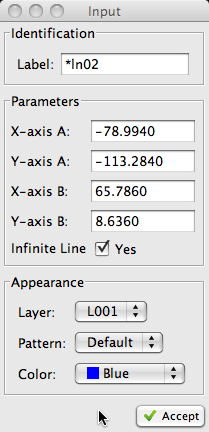

Step 1 of 1:
Key the coordinates or
Indicate the create a
point
the create a
point
the create a
point|
Step 1 of 1:
Key the coordinates or
Indicate
the create a
point |
 a new point (free hand)
a new point (free hand)| The Input Dialog (pictured right) may be used to modify any of
attributes of the point prior to creating it. These attributes include the layer and color. NOTE: The line pattern and line thickness attributes have no affect on points. |
 |